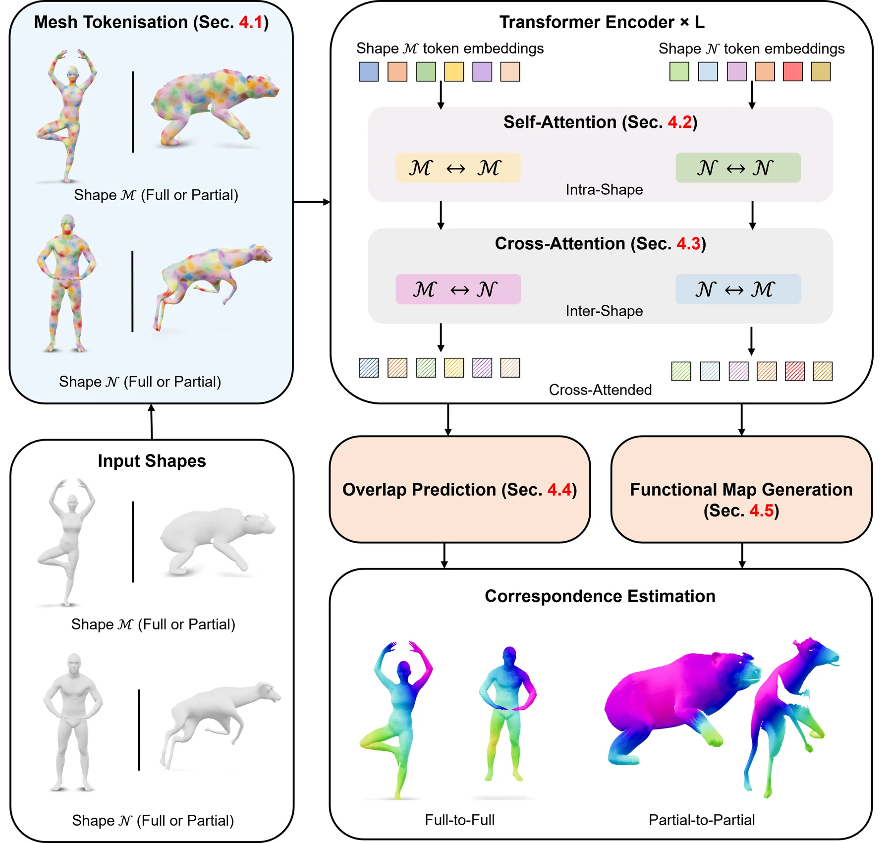
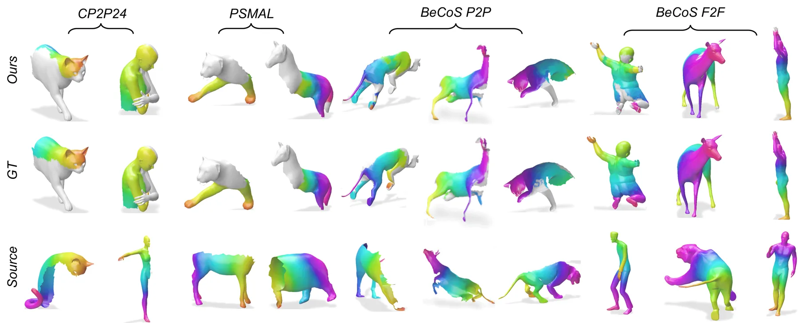
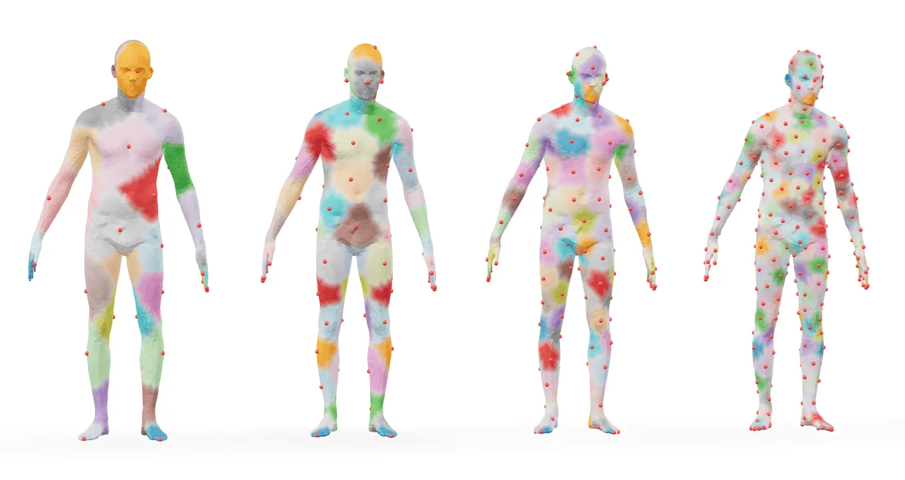
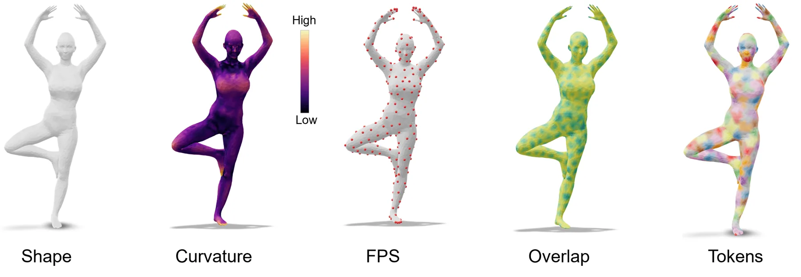
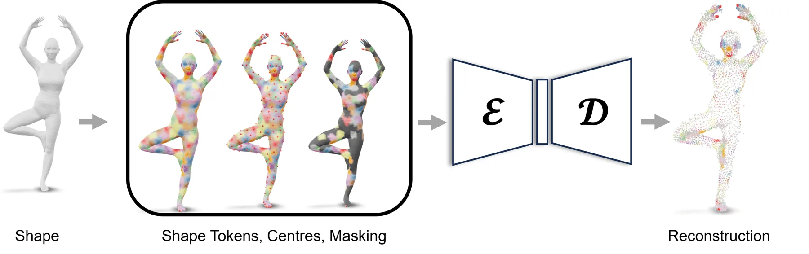
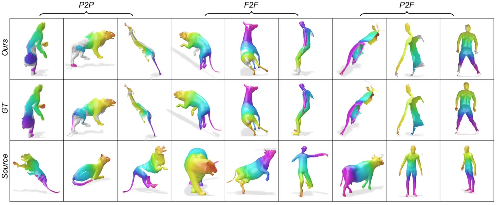

TokenMatch：曲率引导 tokenisation 的 3D mesh correspondence transformerTokenMatch: 3D Mesh Correspondence Transformer with Curvature-Guided Tokenisation
S 级推荐；已查阅官方 arXiv HTML/PDF 与实验章节。
一句话工作总结
把几何自适应 tokenisation、跨形状特征交互和 functional map 预测合并为 feed-forward correspondence 模型，重点解决部分观测和非等距形变。
完整单篇海报（待补全）
当前记录尚未达到完整海报质量门槛，暂不把摘要或评分理由冒充方法/实验结论。
待补字段：研究上下文.network（至少 2 条实质条目）。下一次任务需从论文全文或官方 HTML 提取证据后再发布。
摘要
TokenMatch 用曲率与谱几何信号把 mesh 自适应划分为带重叠的 patch tokens，再用 self/cross attention 学习 dense correspondence。它只在 BeCoS partial-to-partial 上训练，却能迁移到 full-to-full 和 partial-to-full matching。
While data-driven 3D shape correspondence estimation has recently seen substantial progress, robust matching under partial observations and strong non-isometric deformations remains challenging. Existing learning-based approaches often rely on hand-crafted descriptors or template-based representations, whereas recent generative models over functional maps suffer from high inference cost, limited interpretability, and poor generalisation to partial shapes. In response to these limitations, this paper introduces TokenMatch, a new transformer-based unified model for estimating 3D shape correspondences. Our feed-forward approach trained exclusively on BeCoS, a challenging non-isometric partial-to-partial shape-matching dataset, can generalise to matching full shapes without retraining or fine-tuning. TokenMatch uses self- and cross-attention mechanisms to efficiently learn patch-level and point-level relations as well as dense correspondences between shape pairs. Our core insight is that meshes can be adaptively tokenised into patches using shape curvature guidance, enabling effective learning of shape-specific geometric descriptors for correspondence estimation. We evaluate TokenMatch on standard benchmarks for partial and full shape matching, including CP2P, PSMAL, BeCoS, FAUST, SCAPE, and SHREC'19. Our method achieves consistently high performance, in most cases outperforming existing methods for partial and full shape matching in the mean geodesic error and intersection-over-union metrics, while also running faster at sub-second inference speeds.
中文解读摘录
- 论文原文｜官方 HTML 精读｜score 10
- TokenMatch 用曲率和谱几何引导 mesh tokenisation，再通过 self/cross attention 学习 dense correspondence、overlap 和 functional map。
- BeCoS 上 partial-to-partial 训练测试 mean IoU 为 65.25，partial-to-full 直接测试为 55.61，full-to-full 直接测试为 71.85；模型使用 ViT-Base、12 layers、hidden width 768 和 256 tokens。可迁移点是把 correspondence confidence 作为可靠状态估计中的观测协方差。
图表/页面预览
{kind=link}

{kind=link}

{kind=link}

{kind=link}

{kind=link}

{kind=link}
